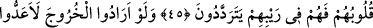
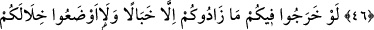
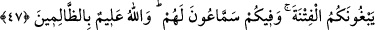
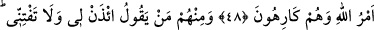
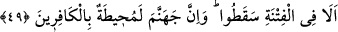

SAVAŞA KATILMAMAK İÇİN
MAZERET UYDURANLAR
41. Gerek hafif, gerek ağır olarak topluca savaşa çıkın, mallarınızla ve
canlarınızla Allah yolunda cihâd edin. Eğer bilirseniz bu, sizin için daha hayırlıdır.
42. Yakın bir dünya menfaati ve orta bir yolculuk olsaydı, elbette sana tâbi
olurlardı. Fakat güç aşılacak mesafe, kendilerine uzak geldi. Bir de “Gücümüz
yetseydi, sizinle beraber çıkardık!” diye Allah’a yemin edecekler. Boşuna
kendilerini mahvediyorlar. Allah onların yalancı olduklarını biliyor.
43. Allah seni affetsin, doğru söyleyenler sana iyice belli olup yalan söyleyenleri
bilmezden önce niçin onlara izin verdin?
44. Allah’a ve âhiret gününe inananlar, mallarıyla ve canlarıyla cihad etmek(ten
geri kalmak) için senden izin istemezler. Allah, takvâ sahiplerini pek iyi bilir.
45. Ancak Allah’a ve âhiret gününe inanmayan, kalpleri kuşkuya düşmüş ve
şüpheleri içinde bocalayıp duranlar senden izin isterler.